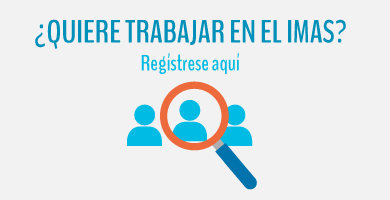

BIENESTAR FAMILIAR |
DESARROLLO SOCIO EDUCATIVO |
 DESARROLLO SOCIO PRODUCTIVO Y COMUNAL |
ATENCIÓN INTEGRAL E INTERINSTITUCIONAL |
Un total de 32 mujeres indígenas cabécar del territorio Nairi Awari, en Pacuarito de Siquirres, provincia de Limón, culminaron con éxito el proceso de Formación Humana del Instituto Mixto de Ayuda Social (IMAS).
Esta es la primera vez que se lleva a cabo dicha iniciativa en ese territorio, y responde al “Modelo Intercultural para la prestación de servicios y beneficios...
ver más [+]
Más comunicados +
Conozca el consentimiento informado
Martes 7 de Mayo, 2024
Informe Labores IV Trimestre Dirección de Gestión de Recursos
Lunes 11 de Marzo, 2024

BIENESTAR FAMILIAR |
DESARROLLO SOCIO EDUCATIVO |
DESARROLLO SOCIO PRODUCTIVO Y COMUNAL |
ATENCIÓN INTEGRAL E INTERINSTITUCIONAL |

La Estrategia Nacional “Puente al Desarrollo” surge en el seno del Plan Nacional de Desarrollo con el propósito de incidir en la reducción de la pobreza extrema y la desigualdad social. Esta estrategia brinda una atención integral, preferente y oportuna a las familias en pobreza extrema desde todas las dimensiones de intervención institucional. Conozca la Estrategia Puente al Desarrollo Ateción a Familias de Puente al Bienestar Protocolo de prevención y mitigación de la COVID-19 en los lugares de trabajo del IMAS Programa Conjunto: Fortalecimiento de la Estrategia Puente al Desarrollo